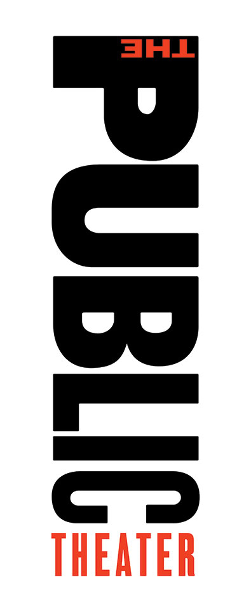

Pentagram
First and foremost, what is Pentagram? Well it’s described as the world’s largest independent design consultancy. Creating classic branding for clients such as; Mastercard, Saturday Night Live and Warner Bros (Just to name a few). Where all “work encompasses graphics and identity, products and packaging, exhibitions and installations, websites and digital experiences, advertising and communications, sound and motion.” (Pentagram, 2020) Where they refuse to be specialists.
Pentagram is equally owned and run by 21 partners, all of which are designers. Having a socialist capitalist model. The thing that sets Pentagram apart from any other design company is their lack of CEO, thus allowing them to do the work they want to make, the way they want to make it, with no regulations or restrictions, granting total creative freedom. A conglomerate of friends who are all leaders in their individual fields. To name a few, include; Michael Bierut, Natasha Jen and Paula Scher.
About
Born in 1948 Paula Scher is considered a pioneer, and is easily one of the most influential graphic designers in the world. You’ll know some of her design work even if you don’t know her name. She joined the New York Pentagram office in 1991, and is described as the “master conjurer of the instantly familiar,” (Pentagram, n.d.). Initially beginning as an art director in the mid to late 70s and early 80s, she faced typography with an fresh attitude, which quickly became a bench mark in the industry. Moving into the 90s, her pioneering identity for The Public Theater created a whole new meaning for cultural institutions.
“If you look through design history and you see something that looks really radical, that’s what you’re going to be doing now. If you think that’s nice, that’s what you’ve already been doing. If you think it’s tired, that’s what you were doing five years ago. But if you think it’s ugly, that’s what you’re going to be doing in five years.”
(Scher, 2017)
This quotation in particular prompts me to think outside the box and be open to the idea that just because I may not like something now, doesn’t mean I won’t like it forever. Due to the fact the only constant in life is change, encourages me to be open to it. For me, as a designer it is important that I push myself out of my comfort zone to allow me to develop my ideas to reach full potential.
She talks about brand identity in an interview with Fast company
Some of her most recognisable branding identity work includes ; Shake Shack, Windows 8 and Citibank.


The Public
Starting off with one her longest running, most recognisable projects, The Public Theater, later known as The Public. Scher has recently written a book titled ’25 years at the public’ which she goes into depth about her time creating an identity for The Public.
She describes her relationship with The Public “like any marriage, it had its ups and downs […] I’ve had terrific times and terrible times. I have accomplished a lot and learnt even more” (Scher, “25 Years at The Public”, 2020)
The Public was Schers first landmark identity project that everyone knew and saw. She quotes “ I didn’t think I’d feel significant as a designer at Pentagram until I had a project that was on that kind of scale” (Scher, “25 Years at The Public”, 2020) referring to her partner John McConnels work for Boots, in London.
Schers involvement with The Public Theater all began in 1990, in the early days of her career. George Wolf, the director reached out after he saw some of her work published in ‘Graphic Design New York’ a book written by future partner of Schers, Michael Bierut. Her work for The Public aimed to be inclusive to create a sense of community. The Public Theater was theatre for everyone.
Brand Identity
When designing the logo, Scher opted for a different approach to what has previously been done in theatre advertising at the time. She based her designs on typography rather than imagery, and took inspiration from Rob Kelly’s book, American Wood Type, where there are demonstrations of different typefaces. In the book he displays the letter R in their thickest and thinnest form. Scher quotes “this would be a great way to express diversity”. (Scher, “25 Years at The Public”, 2020)
‘Bring In ‘Da Noise, Bring In ‘Da Funk’
In 1995 George Wolf wrote a tap rap musical called in which Scher designed a text heavy poster, which presented lots of information in a dynamic and expressive way. The ‘weight and proportions of words seem to narrow, widen, and turn like the city’s streets.’
This bold design “became emblematic of Public Theater style and also became emblematic of New York”. (Scher, “25 Years at The Public”, 2020) She made a point of only including names of directors and authors of the play. She quotes “If you put the names of the actors and actresses, some of which were quite famous […] their managers would want approval of the artwork, and you’d never get anything made […] So we just outlawed it and it was the smartest thing I ever did in my career”. (Scher, “25 Years at The Public”, 2020)
Further simplifying the design process, not allowing anything stand in the way of her creative vision to produce something unapologetic and authentic. Which encourages me as a designer to be more assured in my creative choices.
When the show moved uptown to Broadway, The Public Theater logo wasn’t included as they were promoting the ambassador theatre instead. This is where problems began. Paula quotes “The real public, the public at large saw the Broadway posters and the books and the things that were down the street, not the things that were down at The Public Theater.” (Scher, “25 Years at The Public”, 2020) Which in turn allowed them to recognize the graphic style however didn’t link it to The Public Theater.

Imitation
Following the success of Schers bold design came lots of imitation. “I’ve never had anything quite like this happen where an identity is just ripped off all over the place”. (Scher, “25 Years at The Public”, 2020) The most blatant copy was in ‘Chicago’ which used the exact type style. Due to the fact Chicago was far more affluent than The Public allowed them to promote and advertise on a bigger scale, which in turn meant that a huge audience was seeing all the posters and flyers. Scher comments “you’d see a big Chicago bus go by and then see something from The Public and say aw they’re knocking off Chicago.” (Scher, “25 Years at The Public”, 2020)
Taking inspiration from another designer is one thing, but completely ripping it off is another. So understandably Scher was slightly taken aback. She felt like she had failed The Public due to the fact no one knew what they looked like.
So what’s next? The only thing to do, change. Scher developed an identity totally opposite to anything The Public previously stood for. She created a series of posters which she describes as “withdrawn, quiet and intellectual”
When she initially pitched her new ideas to George Wolf he responded with “Oh dear, Paula’s turning 50, lets have a year of depressing posters.” (Scher, “25 Years at The Public”, 2020)
Teaching an important lesson to be open to change and embrace difference.
50 years
When it came to advertising The Publics 50 year anniversary, Scher moved away from the wood type as everyone was using it. She then redrew the logo in Akzidenz – Grotesk, allowing for a more; clean, strong and noticeable look. Quoting “Isn’t that absurd to make this modernist font be used like an American wood type”
Throughout the 25 years Scher has been working alongside The Public, it has endured many changes. She initially captured its sense of originality, making it accessible and inclusive. Due to the fact she wasn’t getting paid for this work allowed her to have total freedom of expression. “They wanted to pay me but I didn’t want them to […] The moment they pay me the moment they ruin the relationship. The exchange of money meant some power, to the way I would be listened to”. (Scher, “25 Years at The Public”, 2020)
Awards
Due to Scher being a highly acclaimed graphic designer with undoubtable success in the industry, she’s been the recipient of countless awards and prizes. To name a few include; The National Design Award for Communication Design, the AIGA medal and the Chrysler award for Innovation in Design, among [many] others. (Paula Scher- International “Leonardo da Vinci” Lifetime Achievement Award, n.d.)
Conclusion
In the 29 years Paula Scher has been working within Pentagram, she’s made a huge impact on New Yorks design scene. From her 25 years with The Public, to creating the iconic Citibank logo, no one can create a brand identity quite like she can. The bold and unapologetic approach of her work hugely inspires me. With her hundreds of awards no wonder she’s considered a pioneer and one of the most influential graphic designers in the world.
Bibliography
| Pentagram. (2020). About. Retrieved from Pentagram: https://www.pentagram.com/about |
| Pentagram. (n.d.). About/Paula-scher. Retrieved from Pentagram. |
| Scher, P. (2017, April 21). How Pentagram Really Works. (M. Wilson, Interviewer) |
| Scher, P. (2017, November 15). One Step Ahead: we meet Paula Scher, the trailblazing Pentagram Partner. Retrieved from It's nice that: https://www.itsnicethat.com/features/paula-scher-graphic-design-151117 |
| Scher, P. (2020, July 15). “25 Years at The Public”. (S. Adams, & G. Kondrup, Interviewers) |